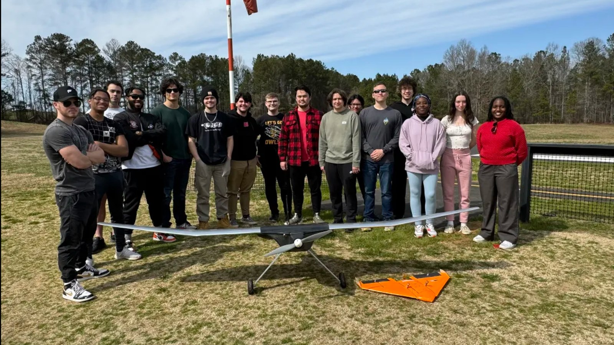

Sheet 01
Hands-On Build
Fig. 01+ Add Photo
Kennesaw Rocketry TeamDec 2025 – Present
Liquid Propulsion
Bipropellant Rocket Engine
Vice President; previously Liquid Propulsion Lead
- Designing and sizing a N₂O / ethanol bipropellant engine targeting 250 lbf thrust at an O/F ratio of 4.8 — thrust equations, injector pressure drop, chamber pressure, and mass-flow calculations
- Designing an injector cold-flow test stand around a pressurized nitrogen supply (~150–220 psi) for an upcoming water cold-flow injector test
- Reviewed and refined a coaxial swirl injector assembly through SolidWorks design checks ahead of fabrication
N₂O / Ethanol250 lbf targetSolidWorksCold-Flow Test
Fig. 02+ Add Photo
Kennesaw Rocketry TeamDec 2025 – Present
CAD / Manufacturing
Intercollegiate Rocket Engineering Competition Rocket
Vice President
- Directing the design and manufacturing of the team's competition airframe for the Intercollegiate Rocket Engineering Competition (IREC), from fin can and body tube layout through final assembly
- Resolved fin-to-airframe gap issues on the fin can assembly through iterative SolidWorks CAD corrections, then carried those design changes through fabrication and fit checks on the physical build
- Oversaw manufacturing processes across the airframe — including composite layup, machining, and fastener/joint selection — to keep the build on tolerance and flight-ready
- Standardized build documentation and coordinated across Rocket Design, Avionics, and Payload subteams as part of administrative leadership
SolidWorksFit & ToleranceComposite LayupIREC

Fig. 03 + Add PhotoAerial Robotics Competition TeamSep 2023 – Apr 2025
Team Lead
Powered Autonomous Delivery Aircraft (PADA)
SAE AERO Design — Team Lead, 20+ members
- Led the full design, manufacturing, and flight-test lifecycle of a carrier-launched delivery aircraft, from CAD through fabrication and integration
- Manufactured a carbon fiber mold and performed a wet layup to construct the aircraft's fuselage
- Built and flew a custom flying wing that detached mid-flight from a larger carrier aircraft and autonomously navigated to landing coordinates it detected in flight
- Configured and tuned a Matek H743 flight computer to achieve stable flight on an inherently unstable airframe
Carbon Fiber LayupArduPilotMatek H743
Fig. 04+ Add Photo
Independent / LabIn Progress
Design Phase
Aerodynamic Surface-Treatment Testbed
UAV testbed for evaluating surface treatments
- Developing a dedicated testbed UAV with modular wing panels to evaluate surface treatments, including shark-skin riblet films and covert feather-inspired flaps
- Identified the Heewing T1-S Ranger S (non-VTOL variant) as a candidate base airframe
Modular WingsRiblet Film